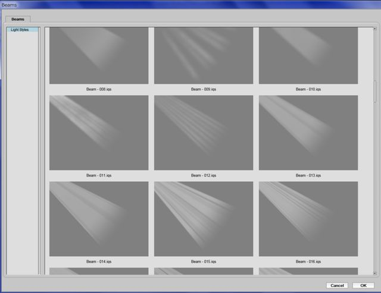

Плагин Auto Fx (часть 4)
Фильтры категории Mystical Lighting & Ambiance
В этой категории эффектов собраны фильтры для создания эффектов освещения и окружающей среды (рис. 1).
Подобно тому, как в группе Mystical Focus были собраны фильтры для сглаживания, размытия и т. п., способные удовлетворить вас на все случаи жизни, в группе Mystical Lighting & Ambiance собраны эффекты для создания самых разнообразных эффектов освещения. Похоже разработчики учли все мыслимые и немыслимые варианты эффектов, которые могут пригодиться в любой момент.
Начнем сначала рассматривать группу эффектов Lighting (Освещение).
Фильтры группы Lighting (Освещение)
Для поклонников создавать или добавлять всякие световые эффекты в изображение, эта группа фильтров просто «Клондайк». Далее, в этом уроке вы в этом сами убедитесь…
Фильтр Brighten Highlights (Осветление светов)
Этот неказистый на первый взгляд фильтр (рис. 2), на самом деле является довольно мощным инструментом, позволяющим в считанные секунды получить нужный результат.
Казалось бы, что при таком скромном наборе элементов управления, получить в итоге что-то стоящее сложно. Но не будем спешить с выводами.
Начнем рассмотрение инструментов фильтра по порядку. Знакомые уже нам кисти, здесь называются несколько иначе, чем в фильтрах категории Mystical Focus. Верхняя кисть, которая отменяет действие эффекта, в этом фильтре называется Erase Effect (Стереть эффект). Что-то наподобие ластика. Этот инструмент довольно гибкий, учитывая, что это разновидность кисти, с вытекающими отсюда последствиями. Этот инструмент работает только в режиме Global (Глобальный). Но в нашем случае, фильтр может работать только в этом режиме.
Инструмент Erase Effect (Стереть эффект) имеет одну особенность. Предположим, вы обработали им участок изображения, к которому был применен эффект. Естественно эффект после этого исчезнет. Если вы хотите вернуть назад результат применения эффекта, обработайте изображение еще раз инструментом Erase Effect (Стереть эффект), но при этом удерживайте нажатой клавишу Alt. Также можно регулировать степень «затирания» эффекта, регулируя значение Opacity (Непрозрачность) в окне Brush Palette (Палитра кистей).
Ниже, знакомый нам инструмент – Brush On (Кисть). Работает он также, как и в рассмотренных нами ранее фильтрах. Размер, прозрачность и мягкость кисти можно задавать с помощью параметров в окне Brush Palette (Палитра кистей).
Теперь познакомимся с остальными элементами управления фильтра Brighten Highlights (Осветление светов).
• Ползунок Highlights (Света) – определяет степень осветления изображения. Чем больше значение, тем светлее обработанный участок изображения.
• Ползунок Softness (Мягкость) – этот параметр так же, как и в других фильтрах плагина, по своему действию напоминает фильтры размытия.
• Элемент управления Tonal Range (Тональный диапазон) – состоит из двух ползунков. Довольно замысловатый параметр именно из-за наличия двух ползунков, однако действует в соответствии со своим названием. Чем больше расстояние между ползунками, тем большую часть изображения будет охватывать эффект. По логике вещей, левый ползунок отвечает за распространение эффекта в более темных областях изображения. Т. е., чем он левее, тем больше теневых участков будет осветлено. Соответственно правый ползунок отвечает за светлые области. По идее, если сместить оба ползунка ближе к левому краю, то эффект проявится в теневой части изображения. Однако такой строгой закономерности мне выявить не удалось или проявление ее настолько слабое, что практически не имеет значения. Степень влияния этого элемента управления в основном определяется расстоянием между левым и правым ползунком.
А теперь короткий пример. На рис. 3 показано исходное изображение.
Красным кружком я обвел то место рисунка, где мы будем «испытывать» наш фильтр. Т. к. изображение достаточно большое, то я обрезал лишнее (рис. 4).
Что нас интересует в данном примере? Нас интересует освещенная часть стены над лампой. Здесь можно хорошо показать работу фильтра. Запустим плагин и вызовем фильтр: Select Effect > Mystical Lighting & Ambiance > Brighten Highlights (Выбрать эффект > Мистическое освещение и окружение > Осветление светов).
С помощью инструмента Brush On (Кисть), который по умолчанию при запуске фильтра активен и обработаем часть стены над лампой (рис. 5).
Значения всех параметров оставим по умолчанию. Получим результат (рис. 6).
Скриншот уменьшен до нельзя, но тем не менее видно, что при параметрах по умолчанию, действие фильтра не слишком заметно (исходное изображение показано слева). Тем не менее, освещенная часть стены стала чуть ярче, особенно в верхней правой части (на рисунке показано стрелкой). Также обратите внимание, что более темная часть стены никак не изменилась, хотя мы выделили и ее во время закраски инструментом Brush On (Кисть) (рис. 5). Теперь становится понятным название и назначение фильтра, он делает светлее (ярче) более светлые области изображения.
Теперь посмотрим влияние различных параметров фильтра на получаемый эффект.
Я еще по-моему не упоминал, что для применения эффекта с измененными параметрами, не обязательно все отменять и начинать заново. Достаточно раз обработать кистью участок и затем подбирать параметры. Плагин довольно сообразительный и при изменении параметров, он не «суммирует» результаты изменений, а показывает только последний результат воздействия фильтра.
Итак, посмотрим влияние параметра Opacity (Непрозрачность) (рис. 7).
Обратите внимание, что параметр Opacity (Непрозрачность) не только влияет на силу проявления эффекта (или лучше сказать его видимость), но и на «мягкость». Сравните рис. 7 слева и справа. При значении Opacity = 10 действие фильтра не только менее заметно, но и границы освещенной области мягче.
На рис. 8 показано влияние параметра Highlights (Света) при значении параметра Opacity = 40 по умолчанию.
Что интересного обнаруживается при взгляде на рисунок 8? При изменении значения Highlights (Света) от 10 до 70 (разница 60), изменение освещенности не слишком заметно. Зато при значении Highlights = 100 повышение яркости освещенной части весьма заметно, хотя разница с значением по умолчанию всего лишь 30.
На рис. 9 показано влияние параметра Tonal Range (Тональный диапазон). Значение остальных параметров оставлено по умолчанию.
Как видно из рисунка 9, увеличение тонального диапазона достаточно сильно влияет на размеры области, в которой проявляется эффект. Т. е. если мы обработали всю стену над лампой, то при малом расстоянии между ползунками, видимый размер эффекта меньше.
И хотя при рассмотрении влияния элементов управления по отдельности не приводит к впечатляющим результатам, то при правильном подборе значений всех параметров, эффект получается гораздо симпатичней.
Где же лучше всего применить этот фильтр? Этот фильтр лучше всего применять там, где имеются освещенные участки, но по вашему мнению их нужно сделать светлее. Таким примером может служить рис. 10 (исходное изображение).
Здесь все выглядит нормально. Но что, если вам понадобится сделать так, чтобы освещенная часть леса была светлее и полоски света на земле также были ярче? С помощью фильтра Brighten Highlights (Осветление светов) это сделать проще простого (рис. 11).
Картинка стала более «жизнерадостной» при увеличении яркости в светах. Стоит обратить также внимание, что с помощью фильтра можно подкорректировать изображение очень мягко. Т. е. изображение в целом не пострадало, а эффект проявился именно там, где планировалось.
Фильтр Brighten Shadows (Осветление теней)
По своему действию фильтр Brighten Shadows (Осветление теней) аналогичен фильтру Brighten Highlights (Осветление светов) с той лишь разницей, что он это делает не со светлыми участками изображения, а с темными. Окно фильтра показано на рис. 12.
Изучая предыдущие фильтры, мы познакомились почти со всеми элементами управления, поэтому в этом фильтре вы обнаружите уже знакомые вам параметры. Рассматривать их подробно теперь нет смысла. Хотя пару слов по этому поводу сказать необходимо.
Незнакомый еще для нас параметр, это ползунок Fuzziness (Разброс). Этот параметр знаком пользователям Фотошопа, но его нет в Photo-Paint. Аналогом этого параметра в Photo-Paint является ползунок Smooth (Сглаживание) в диалоговом окне Color Mask (Цветовая маска). Но в случае с Photo-Paint этот параметр влияет на размеры маски, а в случае с фильтром Brighten Shadows (Осветление теней) – на размер области затрагиваемой эффектом. Увеличение значения параметра Fuzziness (Разброс) приводит к увеличению оттенков, включенных в область затрагиваемую эффектом. Этот параметр «работает в паре» с параметром Tonal Range (Тональный диапазон).
Также, в отличие от предыдущего фильтра, фильтр Brighten Shadows (Осветление теней) может работать в двух режимах, Global (Глобальном) и Brush On (Кисть).
Еще одно отличие этого фильтра от предыдущего – наличие инструмента Gradient Path (Путь градиента) (рис. 13)
Этот инструмент позволяет создать путь, вдоль которого будет распространяться перетекание эффекта, постепенно затухая по мере приближения к конечной точке пути.
Остальные элементы управления нам уже встречались ранее, и как я предупреждал в первом уроке, на принципе работы с ними я останавливаться не буду.
Хорошим примером, демонстрирующим осветление темных участков, является обработка изображения на рис. 14 (исходное изображение).
После применения фильтра, получился результат, как на рис. 15.
Эффект применялся с настройками по умолчанию и лишь верхняя часть изображения была обработана инструментом Erase Effect (Стереть эффект), чтобы удалить эффект с неба.
Применение эффекта заметно осветлило часть моря в левее полоски света, но как и в случае с предыдущим фильтром, «эффект работает» мягко, не искажая изображение в целом.
Фильтр Light Beams (Лучи света)
Фильтр Light Beams (Лучи света), это точно «находка для шпиона», для любителей добавить солнечные или другие лучи в изображение. Здесь вам предоставляется широчайшее поле деятельности для «освещения всего что движется (и того что не движется тоже)». Окно фильтра показано на рис. 16.
В окне этого фильтра присутствует много элементов управления характерных именно для него, т. к. эффект лучей света можно отнести к специфическим эффектам.
Рассмотрим элементы управления этого фильтра, т. к. я не сильно ошибусь, если скажу, что у вас проявится к этому фильтру «любовь с первой ложки».
Первый элемент управления – раскрывающееся меню Light Mix (Смешивание света) (рис. 17).
Здесь вам предоставляется на выбор 5 типов смешивания. Два типа, Color (Цвет) и Contrasted (Контрастирование), дают отчетливо видимые лучи света. Три других лишь слегка осветляют участок изображения и зачастую даже невидно их воздействие. По умолчанию в раскрывающемся меню Light Mix (Смешивание света) выбран тип Overlay (Перекрытие).
Ниже расположен элемент управления Light Color (Цвет света) (рис. 18).
Работа с этим элементом управления напоминает работу с интерактивной заливкой. По бокам находится два указателя цвета. По умолчанию начальный и конечный цвет белый, что при первом взгляде на этот элемент управления может сбить с толку. Перемещение ползунка влево и вправо в этой ситуации естественно не дает никакого результата. Чтобы изменить начальный или конечный цвет, нужно дважды щелкнуть на указателе цвета. В появившемся, знакомом уже нам окне Color Picker (Указатель цвета), задать цвет. В этом элементе управления можно добавлять дополнительные «элементы управления цветом» (назовем их так), для чего нужно дважды щелкнуть между указателями цвета, после чего появится еще один ползунок. Можно добавлять столько «элементов управления цветом», сколько необходимо. В этом случае элемент управления Light Color (Цвет света) будет иметь вид, как например, на рис. 19.
Если вам больше не нужен какой-то из промежуточных «элементов управления цветом», вы можете его удалить, щелкнув на нем правой кнопкой мыши. Ниже находятся две кнопки, Load (Загрузить) и Save (Сохранить). Понятно, что кнопка Load (Загрузить) позволяет загрузить заготовку градиента. После нажатия кнопки появится диалоговое окно Gradients (Градиенты) (рис. 20).
Можно создать свой градиент и сохранить в виде заготовки, нажав кнопку Save (Сохранить). Ваша заготовка появится в списке заготовок окна Gradients (Градиенты). Надо заметить, что имена заготовки необходимо писать английскими буквами, потому что русские буквы отображаются иероглифами (по крайней мере у меня). Плагин упорно не хочет дружить с русским языком.
Прежде, чем мы двинемся дальше, скажу пару слов о том, что вы увидите при вызове этого фильтра. В области предварительного просмотра появится Т-образный элемент управления (рис. 21).
Работа с этим элементом управления хоть и до предела проста, но требует некоторой тренировки, чтобы легко с ним управляться. Этот элемент управления представляет собой ничто иное, как путь или направление лучей. Можно менять направление лучей, поворачивая его, перемещать, менять длину «верхней поперечной планки», что приведет к сужению или расширению потока лучей. Можно добавлять или удалять эти элементы управления. Для добавления такого элемента управления достаточно щелкнуть мышью в области изображения. О возможности такого добавления будет указывать форма указателя мыши, в виде маленького наконечника стрелки с плюсиком. Таким образом можно добавлять требуемое количество источников лучей света. Для удаления такого элемента управления достаточно навести на него указатель мыши и щелкнуть на нем, чтобы выделить, а затем нажать клавишу Delete.
Для быстрого знакомства с возможностями фильтра, можно загрузить заготовку стиля лучей, нажав кнопку Select Beam Style (Выбрать стиль луча). В открывшемся диалоговом окне Beams (Лучи) (рис. 22) можно выбрать необходимый стиль. В вашем распоряжении будет довольно обширная библиотека стилей.

Ниже расположена группа ползунков, назначение которых вполне очевидно:
• Ползунок Spread (Разброс) – задает величину угла раскрытия луча. Чем больше значение этого параметра, тем шире зона, которую охватят лучи.
• Ползунок Fade Out (Затухание) – определяет скорость (величину) затухания луча. Чем больше значение, тем короче будет поток лучей. В определенной мере этот параметр также влияет и на яркость лучей.
• Ползунок Softness (Мягкость) – влияет на степень размытия потока лучей. При малом значении этого параметра, отдельные лучи (или группы лучей) становятся отчетливо видны. Границы лучей также отчетливо просматриваются. Однако в природе чаще всего свет распространяется равномерно и между лучами нет четких границ. Поэтому вам скорее всего придется выбирать большие значения параметра Softness (Мягкость).
Далее расположена кнопка Select Atmosphere (Выбрать атмосферу), нажатие которой приводит к открытию диалогового окна Atmosphere (Атмосфера). Это окно аналогично окну Beams (Лучи), где в списке заготовок Smoke and Haze (Дым и туман) вам предоставлен шикарный выбор заготовок атмосферы.
Под кнопкой Select Atmosphere (Выбрать атмосферу) расположена группа ползунков предоставляющих контроль над параметрами атмосферы:
• Ползунок Strength (Насыщенность) – контролирует степень внедрения атмосферы в поток лучей. В общем, более подходящего русского варианта слова Strength применительно к атмосфере я не придумал…
• Ползунок Softness (Мягкость) ¬– регулирует степень размытости атмосферы.
• Ползунок Density (Плотность) – задает плотность атмосферы.
• Элемент управления Variation (Изменение) – автоматически меняет внешний вид атмосферы, меняя узор и проникновение атмосферы в поток лучей.
Как на мой взгляд, то в данном фильтре влияние атмосферы как-то слабо проявляется на конечном результате.
Теперь давайте рассмотрим группу элементов управления сбоку окна фильтра (рис. 23).
Хотя верхние два элемента управления нам знакомы, но называются они в этом фильтре иначе и имеют некоторые отличия.
Верхний элемент управления, кисть Light Blocker (Блокиратор света), работает точно также, как и в прочих фильтрах, т. е. отменяет действие эффекта в том месте, которое вы обработаете этим инструментом. Чтобы отменить действие инструмента Light Blocker (Блокиратор света), обработайте это место этим же инструментом, но удерживая нажатой клавишу Alt.
А вот со вторым элементом управления, кистью Light Brush (Кисть света), вышла незадача. Согласно определению, эта кисть добавляет свет в те участки изображения по бокам (за пределами) потоков лучей, которые были затемнены с помощью режима Darken Image (Затемнение изображения). Ну, во-первых, этого режима в данном фильтре нет, хотя он присутствует в других фильтрах. К примеру, применение фильтров, где этот режим есть, с последующим использованием фильтра Light Beams (Лучи света) не дает никакого эффекта от инструмента Light Brush (Кисть света). То ли этот инструмент является рудиментом других фильтров, то ли я чего-то не понял, но применить этот инструмент у меня не получилось.
Далее расположен инструмент Light Caster (Заливщик света) – позволяет добавлять источник лучей, путем рисования Т-образного пути распространения лучей. Инструмент не сильно гибкий в работе, но для создания дополнительного потока лучей этого вполне достаточно.
Самый нижний инструмент – Light Blocker (Блокиратор света). В отличие от одноименной кисти, этот инструмент позволяет прорисовать путь или границу отсечения распространения света. Позади нарисованного вами пути, лучи распространяться не будут. В контексте использования этого эффекта, это достаточно полезный инструмент.
Как только вы прорисуете путь инструментом Light Blocker (Блокиратор света), станет доступным ползунок Blocker Opacity (Непрозрачность блокиратора), который по умолчанию недоступен. Назначение этого параметра – регулировать яркость лучей позади нарисованного вами пути.
Давайте рассмотрим самый простейший пример применения этого фильтра. На рис. 24 показан рисунок вымышленного бара.
После применения фильтра, получим результат (рис. 25).
Для получения такого результата я практически не возился с настройками. Достоинства и возможности фильтра вы сможете оценить сами, поработав с ним.
Фильтры Light Brush (Светлая кисть) и Light in the Dark (Свет во тьме)
Фильтр Light Brush (Светлая кисть)
Возможно я не совсем правильно «обозвал» этот инструмент в русском варианте, но смысл ясен, этот фильтр позволяет осветлять светлые участки изображения. Хотя он прекрасно справляется со своими обязанностями и в тенях. При первом знакомстве с фильтром Light Brush (Светлая кисть), я несколько недооценил его возможности, т. к. времени на изучение всех тонкостей у меня мало. Положительными моментами в этом фильтре являются: его простота и гибкость. Почему простота? Вы можете в этом убедиться, взглянув на окно фильтра (рис. 26).
А гибкость ему придает тот факт, что этот инструмент является кистью, что автоматически означает применение его к любой произвольной области изображения. Дополнительно к этому вспомните о возможностях использования всевозможных форм кистей и вы можете представить всю его гибкость и мощность. Описывать назначение элементов управления теперь не имеет смысла, вы их уже знаете. Поэтому рассмотрим краткий пример.
На рис. 27 представлено исходное изображение.
Очевидным недостатком этого изображения является слабенькая насыщенность цветов и т. д. Также взглянув на небо…. вы его там не увидите… Просто такое себе светлое пятно. Но мы оставим в покое его недостатки и поставим перед собой несколько иную задачу.
Посмотрите на воду в фонтане. Ну… она какая-то никакая… Напоминает мрачноватую лужу. Давайте мы попробуем ее насколько облагородить с минимальным количеством усилий.
Запустим фильтр Light Brush (Светлая кисть). Т. к. в таком месте, как данный фонтан, вода не может быть кристально чистой, как в лучших бассейнах и иметь соответствующую голубизну, то мы естественно ничего подобного ожидать от результата не будем. В окне фильтра сделаем настройки, как на рис. 28.
Как видите, чтобы добавить хоть какой-то цветности воде, я в области задания цветов задал градиент от зеленого к голубому. В указателях цвета выбрал цвет, как на рис. 29.
В окне Brush Palette (Палитра кистей) сделал настройки, как на рис. 30.
И обработал кистью воду в фонтане (рис. 31).
")
Как видите, вода стала выглядеть гораздо лучше. При этом учтите, что подбор параметров в фильтре у меня занял не больше минуты. Из этого можно сделать вывод, что работа с этим фильтром не представляет труда несмотря на то, что возможностей у него очень много.
Фильтр Light in the Dark (Свет во тьме)
Фильтр Light in the Dark (Свет во тьме) аналогичен фильтру Light Beams (Лучи света), но работает более мощно, давая гораздо более сильный эффект. Дополнительно к этому (о чем свидетельствует название фильтра), он еще хорошо работает с теневыми участками изображения. Окно фильтра показано на рис. 32.
Сравнивая окно этого фильтра с окном фильтра Light Beams (Лучи света) (см. выше рис. 16), можно обнаружить те же элементы управления, плюс дополнительный набор параметров для работы с теневыми участками.
В раскрывающемся меню Light Mix (Смешивание света) находится список режимов, который несколько отличается от аналогичного в фильтре Light Beams (Лучи света) (рис. 33).
На рис. 34 показан результат работы фильтра с значениями параметров по умолчанию, в разных режимах.
Глядя на рисунок 34 несложно догадаться о возможностях и силе эффекта, который проявляется при работе фильтра. Также не нужно обладать чересчур богатым воображением, чтобы найти применение всему этому богатству.
Я не буду в этом уроке описывать подробно элементы управления, надеюсь вы это теперь сможете сделать самостоятельно. Ну и как вариант, я на рис. 35 приведу результат работы фильтра в режиме Black Tone (Черный тон), но уже с измененными параметрами.
В заключение урока.
Остальные фильтры группы Lighting (Освещение) являются вариациями на эту же тему. Пожалуй отличительным является ряд фильтров, которые дополнительно имитируют различные погодные условия. Там вы найдете множество заготовок с имитацией дождя, снега, солнечного света и плюс к этому целый набор заготовок имитирующих тени от различных объектов.
На этом я закончу этот урок и рассмотрение фильтров группы Lighting (Освещение).
")